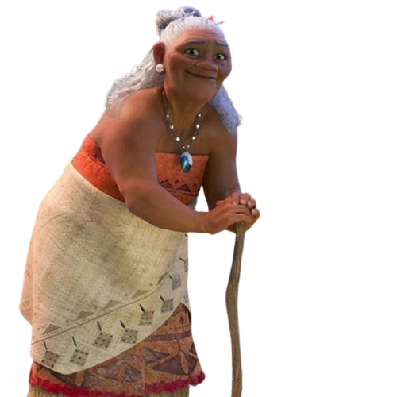

1 – Preocupada com a situação da ilha, você resolve ajudar sua neta Moana contando toda a história para que ela com sua coragem possa desbravar os oceanos atrás do coração de Te Fiti.
2 – Sabendo da coragem de Moana e da não aprovação de seu pai aos desejos de ir além nos oceanos, prefere conversar com o pai de Moana primeiro para depois aconselha-la.
